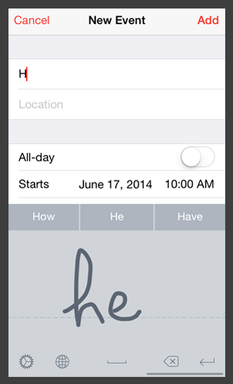
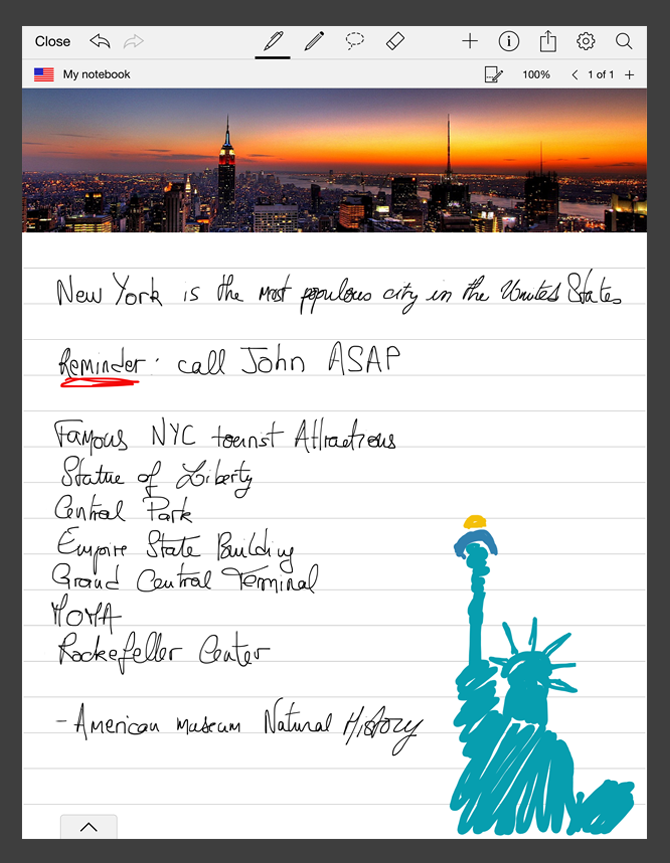

The below use cases are only examples of applications where ITC has been used, sometimes with additional features. Note that all available features for ITC are listed in the API reference.
Here is an integration example of the Interactive Text Component in an input method. In this scenario, the user handwrites information related to a specific event in a smartphone. Candidates and editing gestures can be used to modify text.

Here is an integration example of the Interactive Text Component in a note-taking application. In this scenario, the user can write, draw, add pictures, etc. Blocks of handwritten text can be selected and laid out later. Recognized text becomes interactive and searchable.
